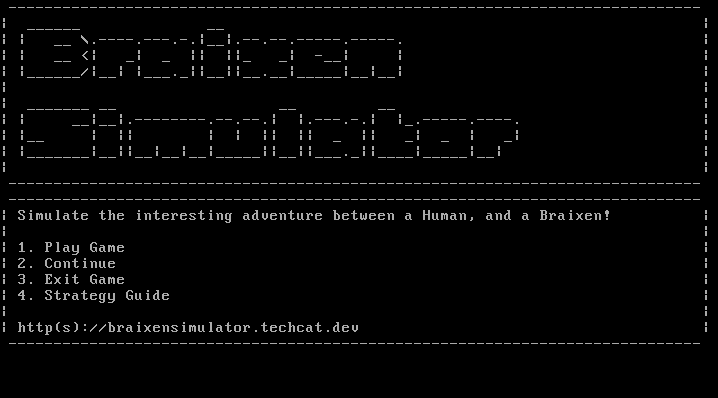
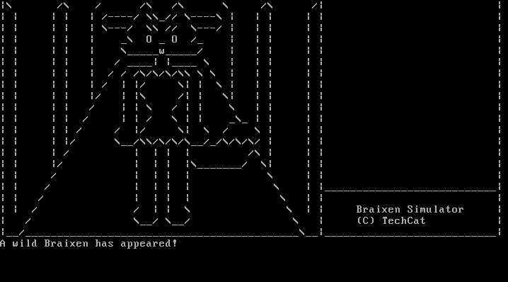
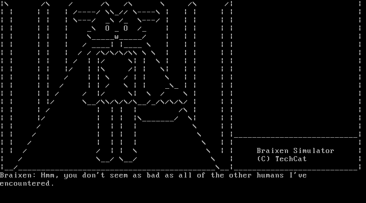
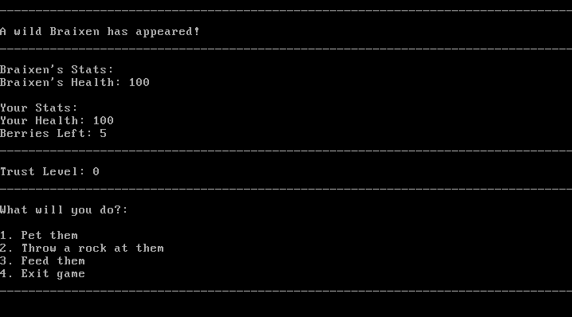

Braixen Simulator is an interactive visual novel esque game made by TechCat-Dev on Github. this game is designed to run on MS-DOS, an operating system released by Microsoft in 1981. In this game, you get to live in the shoes of someone that got lost inside of a forest, and stumbled apoun a strange Pokemon that they've never seen before. the plot of the game is as follows:
You are a 20-something year old human. you've decided that you want to go out and become a Pokemon Trainer. Without any knowledge on how to do so, you take a hike to the nearest patch of grass you can find, and start walking around aimlessly until you can encounter a wild Pokemon. Unfortunately, you lost track of where you were wandering and ended up deep in a forest, all by yourself. You look inside of the backpack you brought with you for anything that could help you escape the forest. After rummaging through your bag, you find nothing that could help you escape this situation you're in. you decide to try and backtrace your steps to get back home. but this is when something very odd happened. You encounter a Pokemon! but this Pokemon is unlike anything you've seen in the past. It has big yellow ears with long red tufts in them, glowing red eyes like you've never seen before, and a big bushy tail with a twig stuck in it. You're totally allured by this Pokemon, and decide that now's your chance to become the Pokemon trainer you've always wanted to be! You take a small rock off the ground, and chuck it at the Pokemon to get its attention. The Pokemon then turns around and faces you. It takes the twig out of its tail and points it in your direction. You notice that the tip of the twig is now on fire! Now's your chance!
"Braixen is a bipedal, fox-like Pokemon. While the majority of its fur is yellow, it has black legs, white arms and face, and a dark orange tail tip. The fur on its cheeks is longer, and a small mane of white fur covers its shoulders and chest. Long, wavy tufts of dark orange fur grow out of its large ears, and its eyes and small nose match this fur in color. When its mouth is open, two pointed teeth can be seen in its upper jaw. Above its legs, the fur sweeps out to either side, resembling a skirt or shorts. Each paw has three small digits. Braixen always keeps a stick in its tail, which it sets alight using friction from its bushy tail fur. The flame from the lit twig is used for both attack and communication." (Source)